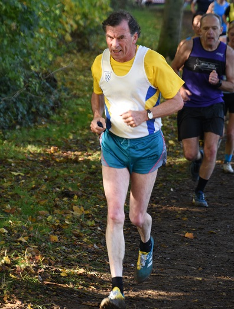
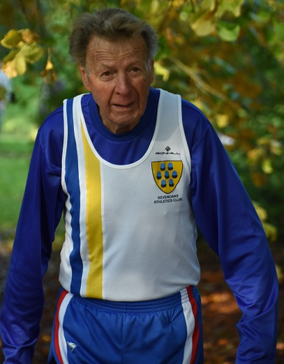
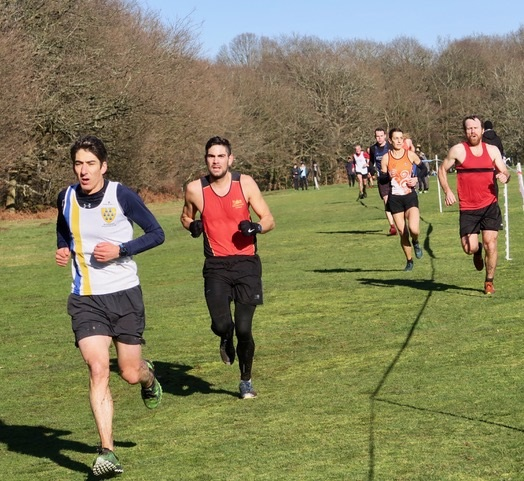

Sevenoaks AC had representatives in three of the male categories at the Kent County Athletics Vets Championships at Central Park, Dartford on 30 November. In the second event, over 5.4k, the over-60 and over-70+ categories were contested along with all the female categories. James Graham was 19th in the M60 race and 3rd M65 in 23:52, while Geoffrey Kitchener was 6th M70 in 26:48.
Also competing in the M70s, Richard Pitcairn-Knowles was 23rd but first M80/M85 in 40:51.
Earlier, in the first race, over 9.3k, Darius Sarshar was 23rd M50 in 34:01.
The full results are here.